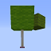

<meta http-equiv="Content-Type" content="text/html; charset=utf-8"/>

<title>PlantsVsZombiesMinecraft</title>

<body background="./woooooooooow.jpg"

style=" background-repeat:no-repeat ;
background-size:100% 100%;
background-attachment: fixed;"

>

<style>

  #canvas {
                position: absolute;
    z-index: 10;
    top: 0;
    left: 0;
    bottom: 0;
    right: 0;
    cursor: none;
        }
        .content{
      position: absolute;
    z-index: 11;
    right: 0;
    left: 0;
    top: 0;
    bottom: 0;
}
.splash{
  position: relative;
  }
  img#awa1 {
    width: 128px;
    background-size: cover;
    border-radius: 200px;
    box-shadow: 0px 0px 40px rgba(63, 81, 181, 0.72);
    border: 3px solid #00a0ff;
    opacity: 1;
    margin: 0 auto;
	margin-bottom: 20px;
	transition: all 1.0s;  
}
#awa1:hover {
    box-shadow: 0 0 10px #fff;
    -webkit-box-shadow: 0 0 19px #fff;
    transform:rotate(360deg);
    -ms-transform:rotate(360deg); 	/* IE 9 */
    -moz-transform:rotate(360deg); 	/* Firefox */
    -webkit-transform:rotate(360deg); /* Safari 和 Chrome */
    -o-transform:rotate(360deg); 	/* Opera */
    filter:progid:DXImageTransform.Microsoft.BasicImage(rotation=3);
}
</style>

<center><a href="https://xinxin1123.github.io" ></a></center>
		  
<center><font size="8">PVZmc版的版本大全~</font> </center>
<center><font size="6">确保你的MC版本为1.12.2哦~</font> </center>
<center><font size="7">如何导入地图？自己百度，qwq</font> </center>

<center><font size="6" color="9F29F2">classic版</font><center>
<center><font size="5"><a href="https://xinxin1123.lanzous.com/iqZA3i6vb2d">classic0.1</a></center>

<center><font size="6" color="9F29F2">sandbox版</font><center>
<center><font size="5"><a href="https://xinxin1123.lanzous.com/i12H7i6vb1c" >Beta0.8</a></center>
<center><font size="5"><a href="https://xinxin1123.lanzous.com/ifSsshj1vra" >Beta0.7</a></center>
<center><font size="5"><a href="https://xinxin1123.lanzous.com/ihtyIhck4sb" >Beta0.6</a></center>
<center><font size="5"><a href="https://xinxin1123.lanzous.com/iZtdch8yckb" >Beta0.5</a>  <a href="https://xinxin1123.lanzous.com/i2zkSh8ygwh" >音乐资源包v1.0</a></font> </center>
<center><font size="5"><a href="https://xinxin1123.lanzous.com/icsJfh8ycja" >Beta0.4</a></font> </center>
<center><font size="5"><a href="https://xinxin1123.lanzous.com/ioWzQh8ycij" >Beta0.3</a></font> </center>
<center><font size="5"><a href="https://xinxin1123.lanzous.com/iVU8dh8ycof" >植物测试2</a></font> </center>
<center><font size="5"><a href="https://xinxin1123.lanzous.com/i2ZsFh8ycgh" >植物测试1</a></font> </center>


